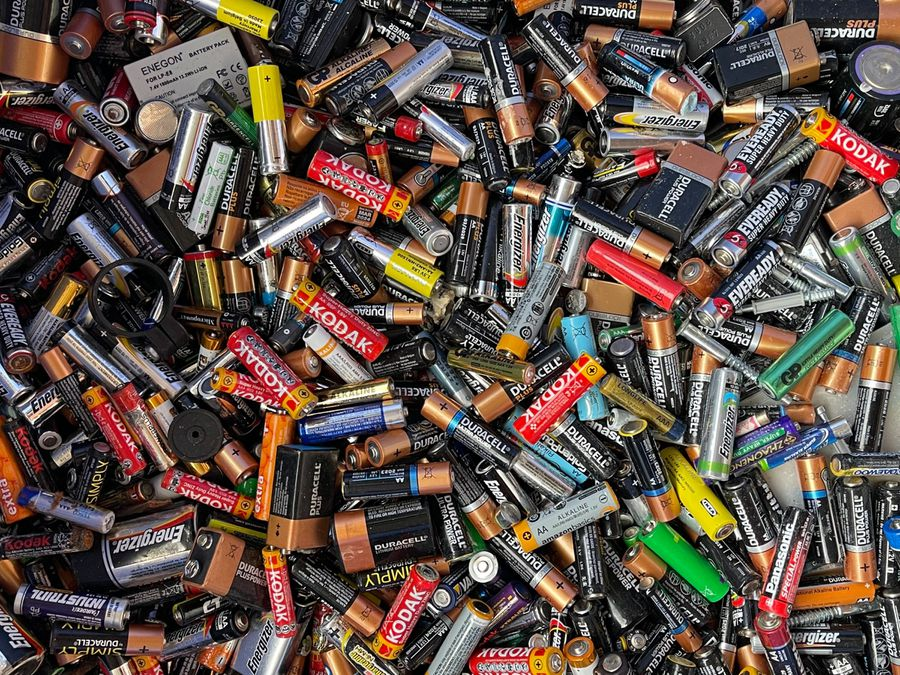
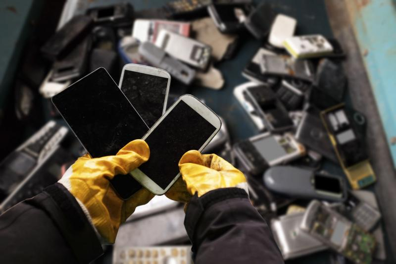
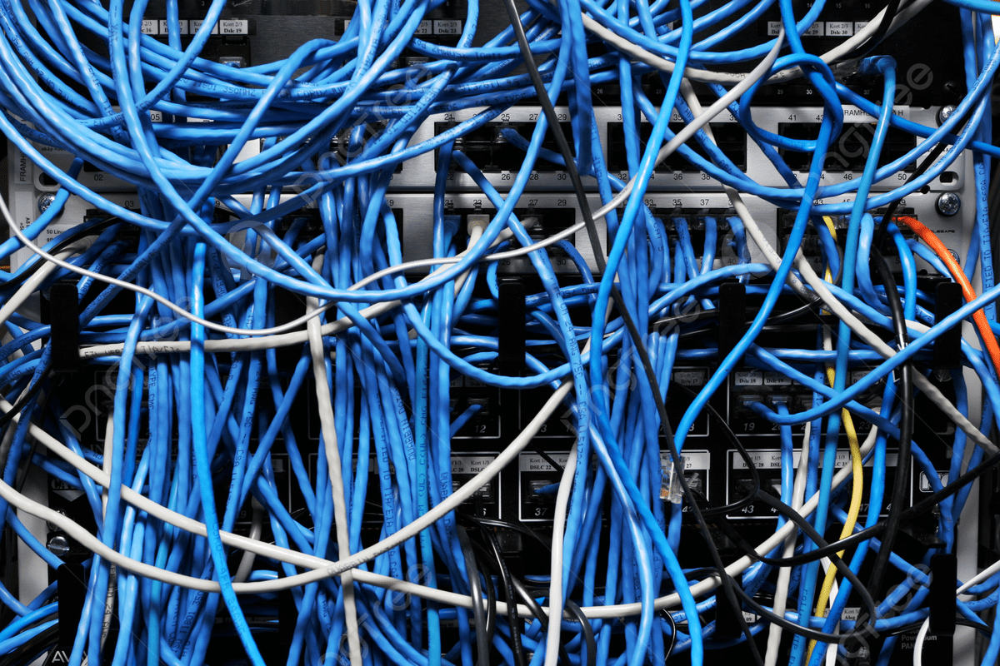

Por que descartar corretamente?
O lixo eletrônico possui metais pesados que contaminam o solo e a água. Além disso, materiais valiosos como cobre e ouro podem ser reaproveitados na indústria.
- Proteção do meio ambiente local.
- Incentivo à economia circular na região.


O que aceitamos nos pontos de coleta

Celulares, tablets e notebooks
Cabos, carregadores e periféricosAtenção: Não recebemos lâmpadas fluorescentes, apenas baterias de íon-lítio e hardwares em geral.